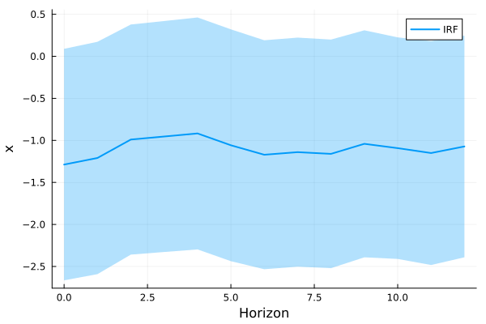
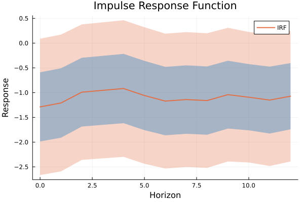
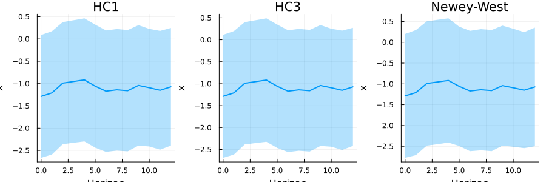

Tutorial 3: Inference and Plotting
This tutorial covers robust variance estimation and IRF visualization.
Setup
using LocalProjections, DataFrames, Random
using StatsModels: @formula
using CovarianceMatrices: HC1, HC3, Bartlett, Parzen, NeweyWest
Random.seed!(456)
n = 200
df = DataFrame(
y = cumsum(randn(n)),
x = randn(n)
)
lp_result = lp(@formula(leads(y) ~ x), df; horizon=12)Robust Standard Errors
LocalProjections.jl integrates with CovarianceMatrices.jl for robust inference.
Heteroskedasticity-Robust (HC)
# HC1 (default)
cov_hc1 = vcov(HC1(), lp_result)
se_hc1 = stderror(cov_hc1; term=:x)
println("HC1 standard errors: ", round.(se_hc1, digits=4))
# HC3 (more conservative)
cov_hc3 = vcov(HC3(), lp_result)
se_hc3 = stderror(cov_hc3; term=:x)
println("HC3 standard errors: ", round.(se_hc3, digits=4))HC1 standard errors: [0.7025, 0.7051, 0.6983, 0.7009, 0.7039, 0.7036, 0.6949, 0.6951, 0.6937, 0.6889, 0.6724, 0.6796, 0.6727]
HC3 standard errors: [0.715, 0.7179, 0.7108, 0.7139, 0.7175, 0.7169, 0.7083, 0.7084, 0.7072, 0.7029, 0.6855, 0.6937, 0.6865]HAC (Newey-West style)
For time series with autocorrelated errors:
# Bartlett kernel with Newey-West bandwidth
cov_nw = vcov(Bartlett{NeweyWest}(), lp_result)
se_nw = stderror(cov_nw; term=:x)
println("Newey-West SEs: ", round.(se_nw, digits=4))
# Parzen kernel
cov_parzen = vcov(Parzen{NeweyWest}(), lp_result)
se_parzen = stderror(cov_parzen; term=:x)
println("Parzen SEs: ", round.(se_parzen, digits=4))Newey-West SEs: [0.7596, 0.7671, 0.762, 0.7627, 0.7619, 0.7316, 0.7383, 0.7431, 0.7434, 0.7357, 0.7235, 0.7113, 0.7275]
Parzen SEs: [0.759, 0.7676, 0.7584, 0.7644, 0.7693, 0.7619, 0.7473, 0.733, 0.742, 0.7377, 0.7204, 0.7453, 0.7311]Fixed Bandwidth HAC
# Fixed bandwidth of 5
cov_fixed = vcov(Bartlett(5), lp_result)
se_fixed = stderror(cov_fixed; term=:x)
println("Fixed bandwidth SEs: ", round.(se_fixed, digits=4))Fixed bandwidth SEs: [0.7511, 0.7595, 0.7524, 0.7583, 0.7605, 0.7516, 0.7379, 0.7295, 0.7344, 0.725, 0.7106, 0.7308, 0.7197]Summary Tables with summarize()
Get a DataFrame with coefficients, standard errors, and confidence intervals:
summary_df = summarize(lp_result, cov_hc1)
println(summary_df)13×5 DataFrame
Row │ horizon coef se lower upper
│ Int64 Float64 Float64 Float64 Float64
─────┼───────────────────────────────────────────────────
1 │ 0 -1.28775 0.702508 -2.66464 0.0891427
2 │ 1 -1.20922 0.705128 -2.59124 0.172807
3 │ 2 -0.99022 0.698309 -2.35888 0.378441
4 │ 3 -0.954003 0.700901 -2.32774 0.419737
5 │ 4 -0.917489 0.703919 -2.29715 0.462167
6 │ 5 -1.05826 0.703572 -2.43723 0.320717
7 │ 6 -1.17096 0.694864 -2.53287 0.190944
8 │ 7 -1.14006 0.695142 -2.50252 0.222391
9 │ 8 -1.16052 0.693702 -2.52015 0.199106
10 │ 9 -1.04096 0.688933 -2.39125 0.309321
11 │ 10 -1.09256 0.672358 -2.41036 0.225236
12 │ 11 -1.15062 0.679593 -2.4826 0.181356
13 │ 12 -1.07236 0.672732 -2.3909 0.246167Convenience syntax
Pass the estimator directly instead of computing vcov separately:
summary_df = summarize(lp_result, HC1())
println(summary_df)13×5 DataFrame
Row │ horizon coef se lower upper
│ Int64 Float64 Float64 Float64 Float64
─────┼───────────────────────────────────────────────────
1 │ 0 -1.28775 0.702508 -2.66464 0.0891427
2 │ 1 -1.20922 0.705128 -2.59124 0.172807
3 │ 2 -0.99022 0.698309 -2.35888 0.378441
4 │ 3 -0.954003 0.700901 -2.32774 0.419737
5 │ 4 -0.917489 0.703919 -2.29715 0.462167
6 │ 5 -1.05826 0.703572 -2.43723 0.320717
7 │ 6 -1.17096 0.694864 -2.53287 0.190944
8 │ 7 -1.14006 0.695142 -2.50252 0.222391
9 │ 8 -1.16052 0.693702 -2.52015 0.199106
10 │ 9 -1.04096 0.688933 -2.39125 0.309321
11 │ 10 -1.09256 0.672358 -2.41036 0.225236
12 │ 11 -1.15062 0.679593 -2.4826 0.181356
13 │ 12 -1.07236 0.672732 -2.3909 0.246167Scaling for Percentages
summary_pct = summarize(lp_result, HC1(); scale=100, level=0.90)
println(summary_pct)13×5 DataFrame
Row │ horizon coef se lower upper
│ Int64 Float64 Float64 Float64 Float64
─────┼───────────────────────────────────────────────────
1 │ 0 -128.775 70.2508 -244.327 -13.2225
2 │ 1 -120.922 70.5128 -236.905 -4.93856
3 │ 2 -99.022 69.8309 -213.884 15.8396
4 │ 3 -95.4003 70.0901 -210.688 19.8876
5 │ 4 -91.7489 70.3919 -207.533 24.0355
6 │ 5 -105.826 70.3572 -221.553 9.90141
7 │ 6 -117.096 69.4864 -231.391 -2.80152
8 │ 7 -114.006 69.5142 -228.347 0.334448
9 │ 8 -116.052 69.3702 -230.156 -1.94863
10 │ 9 -104.096 68.8933 -217.416 9.22307
11 │ 10 -109.256 67.2358 -219.849 1.33695
12 │ 11 -115.062 67.9593 -226.845 -3.27907
13 │ 12 -107.236 67.2732 -217.891 3.41817Different Confidence Levels
# 68% CI (approx. 1 SE)
summary_68 = summarize(lp_result, HC1(); level=0.68)
println("68% CI width: ", round.(summary_68.upper .- summary_68.lower, digits=3))
# 99% CI
summary_99 = summarize(lp_result, HC1(); level=0.99)
println("99% CI width: ", round.(summary_99.upper .- summary_99.lower, digits=3))68% CI width: [1.397, 1.402, 1.389, 1.394, 1.4, 1.399, 1.382, 1.383, 1.38, 1.37, 1.337, 1.352, 1.338]
99% CI width: [3.619, 3.633, 3.597, 3.611, 3.626, 3.625, 3.58, 3.581, 3.574, 3.549, 3.464, 3.501, 3.466]Plotting IRFs
Using Plots.jl with our plot recipes:
using Plots
# Basic plot with 95% CI
plot(lp_result, HC1())
Customizing Plots
# Multiple confidence levels, scaled
plot(lp_result, HC1();
levels=[0.68, 0.95],
irf_scale=1,
title="Impulse Response Function",
xlabel="Horizon",
ylabel="Response",
legend=:topright)
Comparing Variance Estimators
p1 = plot(lp_result, HC1(); title="HC1", legend=false)
p2 = plot(lp_result, HC3(); title="HC3", legend=false)
p3 = plot(lp_result, Bartlett{NeweyWest}(); title="Newey-West", legend=false)
plot(p1, p2, p3, layout=(1,3), size=(900, 300))
Available Variance Estimators
| Estimator | Description |
|---|---|
HC0() - HC5() | Heteroskedasticity-consistent (White) |
Bartlett{NeweyWest}() | HAC with Newey-West bandwidth |
Bartlett(bw) | HAC with fixed bandwidth |
Parzen{NeweyWest}() | HAC with Parzen kernel |
QuadraticSpectral{Andrews}() | HAC with QS kernel |
See CovarianceMatrices.jl documentation for more options.